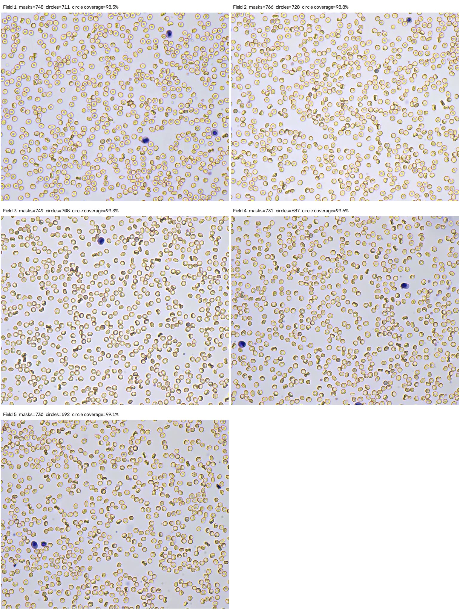
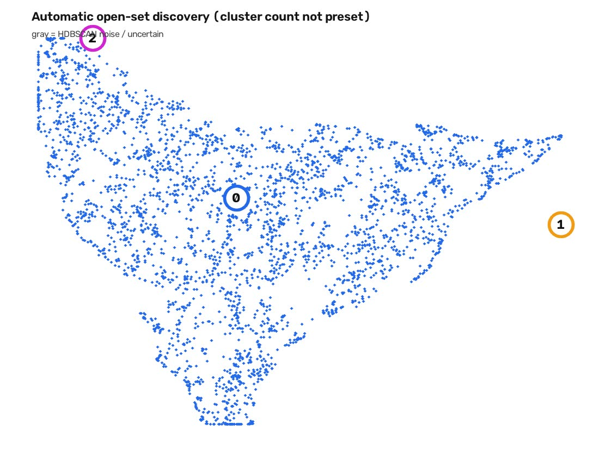
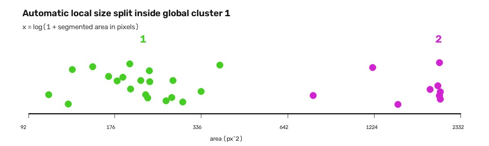
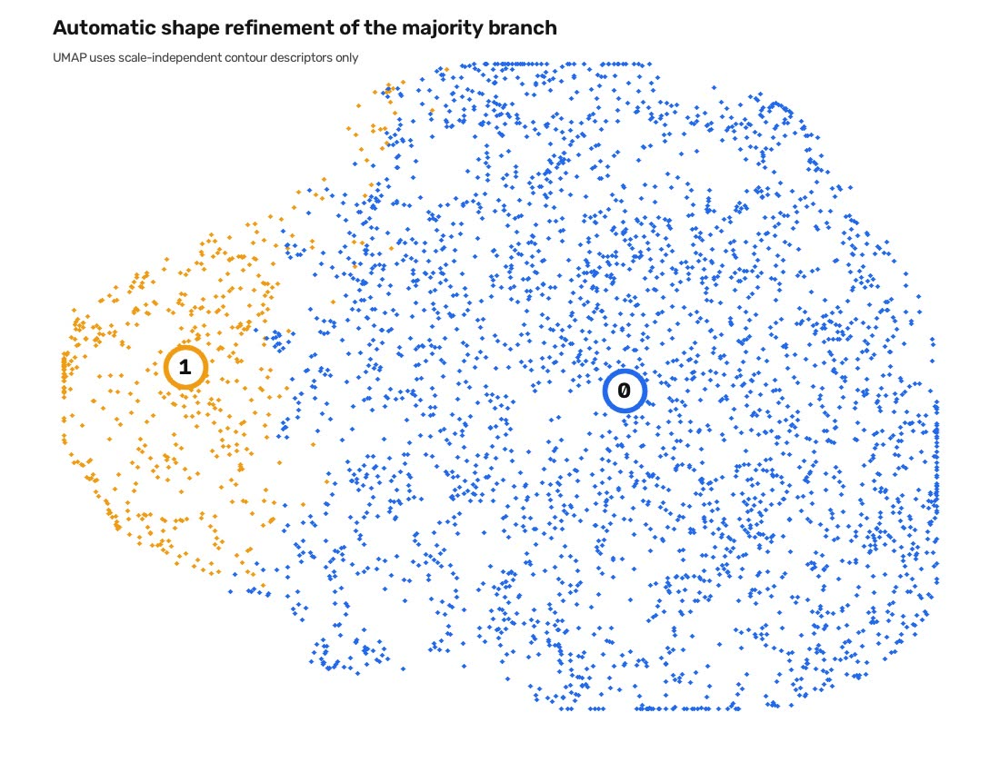
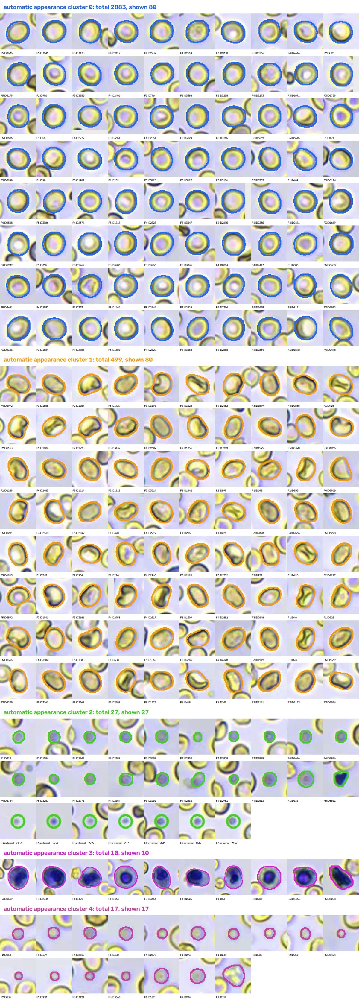

找对象
Cellpose 零样本实例分割；另以独立小目标分支补入 7 个漏掉的微小点。
UNLABELED BRIGHT-FIELD SMEAR · EXPLORATORY PIPELINE
不预设细胞类别、不训练本地深度网络。先分割单个图像对象，再以预训练视觉特征、颜色、尺寸和形态进行无监督发现与稳定性检验。

EVIDENCE FRAME
一个对象是一个 Cellpose 实例掩膜，或一个独立补入的小目标候选；一个簇是算法依据图像特征发现的外观组。五张图没有对象级真值、临床计数或独立测试集，因此这里不报告准确率、F1、mAP，也不将簇命名为红细胞、白细胞或血小板。
Cellpose 零样本实例分割；另以独立小目标分支补入 7 个漏掉的微小点。
预训练 ResNet50 嵌入，加上颜色、面积、圆度、偏心率、长宽比等可解释特征。
UMAP 降维展示；HDBSCAN 通过密度与参数扫描自动选择 3 个全局外观簇。
仅保留通过稳定性标准的 GMM 尺寸拆分与 K-means 形态拆分，形成 5 簇。
ResNet50 仅使用公开预训练权重提取特征，未用这 5 张图重新训练或微调。
EXPERIMENT 01 · EXP004 · COMPLETED / PRELIMINARY
Cellpose cyto3 · 预训练模型 · 不需要本地掩膜标注
5 张 1530 × 1280 明场视野。
Cellpose cyto3，期望直径 30 px，最小实例面积 50 px。
以既有 Hough 圆候选中心作非真值的一致性参照。

EXPERIMENT 02 · EXP008 · COMPLETED / PRELIMINARY
融合特征 · UMAP 仅用于展示 · HDBSCAN 参数扫描

EXPERIMENT 03 · EXP009 · COMPLETED / PRELIMINARY
分支内 log(面积) 高斯混合模型（GMM）· BIC + 分离度 + bootstrap ARI
全局簇 1 的 30 个 Cellpose 掩膜。
小型 20 个，较大型 10 个。
50 次 bootstrap 的中位数。
两成分优于单成分；分离度 6.66 SD。

7 个独立检测的小蓝紫点没有适配的 Cellpose 掩膜，不能与主对象一起拟合 GMM。模型确定后，7 个点均被分配至小型蓝紫色外观簇，因此该簇从 20 个掩膜变为最终 27 个对象。
EXPERIMENT 04 · EXP010 · COMPLETED / PRELIMINARY
尺度无关轮廓描述符 · K-means 候选 k=2–6 · 多重稳定性门槛

EXPERIMENT 05 · CURRENT SYNTHESIS
3 个全局簇 → 蓝紫色支按尺寸拆分 → 大主体按形态拆分
主体形态分支的一支。
主体形态分支的另一支。
20 个掩膜 + 7 个独立小点。
尺寸细分的较大成分。
含至少一个疑似分割伪影。

EXPERIMENT HISTORY
Hough 圆与手工特征：建立候选定位基线；不把预设 k=3 解释成三类细胞。
ResNet50 全图裁剪聚类：分离弱、视野关联明显，否定直接把深度簇当细胞类型。
规则化外观演示：提供可视化审阅，不作为最终分类方案。
Cellpose 零样本分割：为对象级颜色、面积、轮廓特征提供实例掩膜。
融合特征诊断：发现边缘截断会造成形态伪簇，后续聚类改用非边缘对象。
由稀有外观发现、自动全局聚类、尺寸细分到形态细分，形成当前五簇结果。
已完成可复用输入目录流程验证；它是工程泛化测试，不增加生物学真值。
Cellpose-SAM + DINOv2 仍在运行，尚无可报告的最终结果，未纳入本页结论。
INTERPRETATION BOUNDARY
获得可信标签后，才能把当前的外观发现转化为正式的监督分类与定量评估；在此之前，它应被视为严谨的定性探索结果。